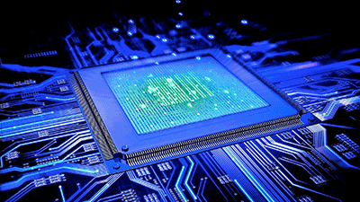
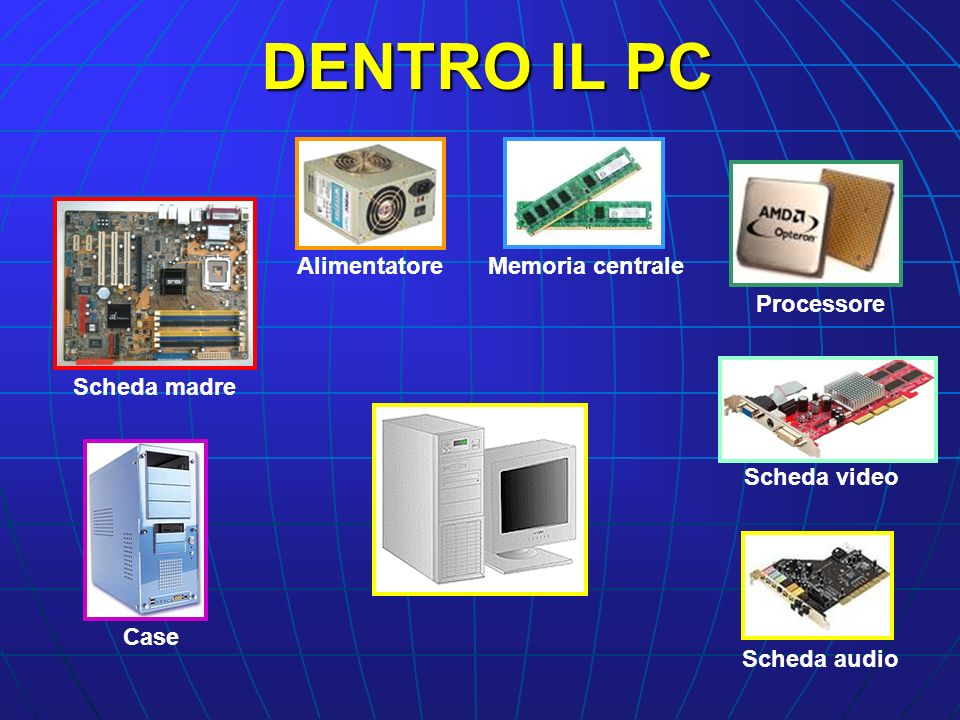

- Gli hardware sono tutti i componenti fisici, concreti (cioè che si possono toccare) di un computer ad esempio: Processore, scheda madre, scheda grafica, tastiera, muose, monitor ecc..
Esistono due tipi di hardware, input e output.
Gli hardware di input sono dispositivi che permettono di inserire dati o comandi in un computer di cui: Tastiera, mouse, microfono, joystick ecc..
Gli hardware di output sono dispositivi che ricevono dati da un computer e li presentano all'utente in vari modi, di cui: Monitor, stampante, cuffie..
Le schede
sono componenti fisici che vengono inseriti o collegati alla scheda madre e servono a svolgere specifiche funzioni.
Scheda madre: è la base su cui si collegano tutti gli altri componenti del computer.
Funzione: È il componente centrale che collega tutti gli altri componenti hardware di un computer.
Scheda video (GPU): responsabile per l'elaborazione grafica.
Funzione: È responsabile per il rendering e l'elaborazione grafica.
La scheda video (o GPU, Graphics Processing Unit) è fondamentale per qualsiasi attività che richieda una riproduzione di immagini e
video complessi, come nei giochi, nell'editing video o nel design 3D.
Scheda audio: gestisce l'input e l'output del suono.
Funzione: Gestisce la produzione e l'elaborazione del suono.
Le schede audio consentono di registrare, riprodurre e modificare l'audio, sia in modo analogico che digitale.
Scheda di rete (NIC): permette la connessione a una rete, ad esempio una rete locale (LAN) o a Internet.
Funzione: Permette al computer di connettersi a una rete locale (LAN) o a Internet.
Le schede di rete possono essere wired (via cavo Ethernet) o wireless (Wi-Fi).
Scheda di memoria: come una scheda SD o una memoria RAM esterna.
Funzione: Si riferisce principalmente a dispositivi di memorizzazione esterni,
come le schede SD (Secure Digital) o schede microSD, che vengono usate per archiviare dati in modo portatile.
Vengono comunemente utilizzate in fotocamere, smartphone e dispositivi di archiviazione esterni.

- Il software è un insieme di istruzioni e programmi che dicono a un computer cosa fare, il software non è tangibile.
Esistono due tipi di software, sistema e applicativo.
Il software di sistema è ad esempio: Windows, android, Ios, Linux ecc...
Il software applicativo è un tipo di programma progettato per svolgere compiti specifici o risolvere problemi particolari per l'utente.
A differenza del software di sistema, che gestisce le risorse hardware e il funzionamento del computer, il software applicativo
destinato a soddisfare le esigenze quotidiane.
"IL SOFTWARE RENDE INTELLIGENTE IL COMPUTER"
